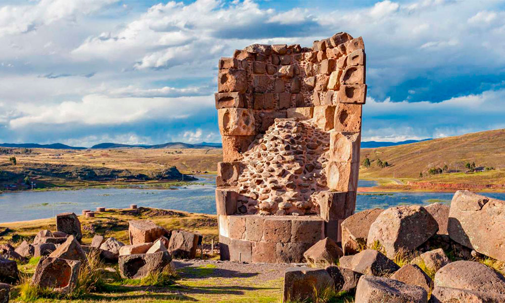
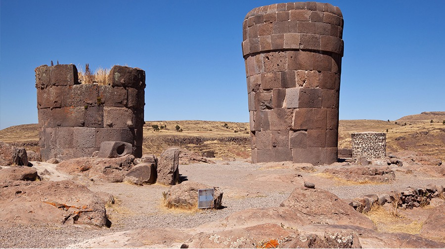
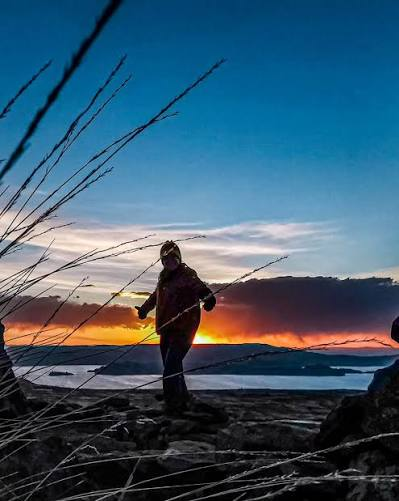

Ubicación
Distrito de Atuncolla, provincia y departamento de Puno, a unos 31 km de la ciudad de Puno, junto a la laguna Umayo.

Un legado histórico en el corazón del Altiplano
El Complejo Arqueológico de Sillustani se encuentra en el distrito de Atuncolla, cerca de la ciudad de Puno, junto a la hermosa laguna Umayo.
Es reconocido por sus impresionantes chullpas, construcciones funerarias de piedra levantadas por la cultura Colla y posteriormente utilizadas por los incas.
Sus construcciones, paisajes y manifestaciones culturales representan una parte importante del patrimonio histórico del altiplano peruano.
Descubrir más →
Distrito de Atuncolla, provincia y departamento de Puno, a unos 31 km de la ciudad de Puno, junto a la laguna Umayo.
Sitio arqueológico de tipo cementerio: un complejo funerario formado por torres de piedra o chullpas.
Hay distintos tipos, según materiales, técnicas, formas y acabados: desde bloques de piedra labrados hasta mampostería irregular.
Reúne colecciones relacionadas con las culturas Colla, Tiwanaku e Inca: cerámica, textiles, metales y materiales líticos.
Fotografía y filmación, observación del paisaje, de flora y fauna, caminatas y trekking.
Fuentes: fichas del MINCETUR y del Ministerio de Cultura, guía técnica del MEF y Guía de Museos del Perú 2023 (análisis documental).
Videos y fotografías de Sillustani ♡
No se encontraron recursos con esos filtros.
Información práctica para planificar tu recorrido.
Conoce las impresionantes construcciones de piedra, contempla la laguna Umayo y descubre el legado histórico y cultural de Sillustani.
Ver ubicación en el mapa
Información de acceso y recomendaciones de carácter general: se verificará con el responsable del sitio antes de la publicación.
Mantente informado sobre nuestras actividades.
¡Queremos escucharte!
¿Tienes preguntas sobre la historia, cultura, galería o visita a Sillustani?
Completa el formulario y envíanos tu consulta.